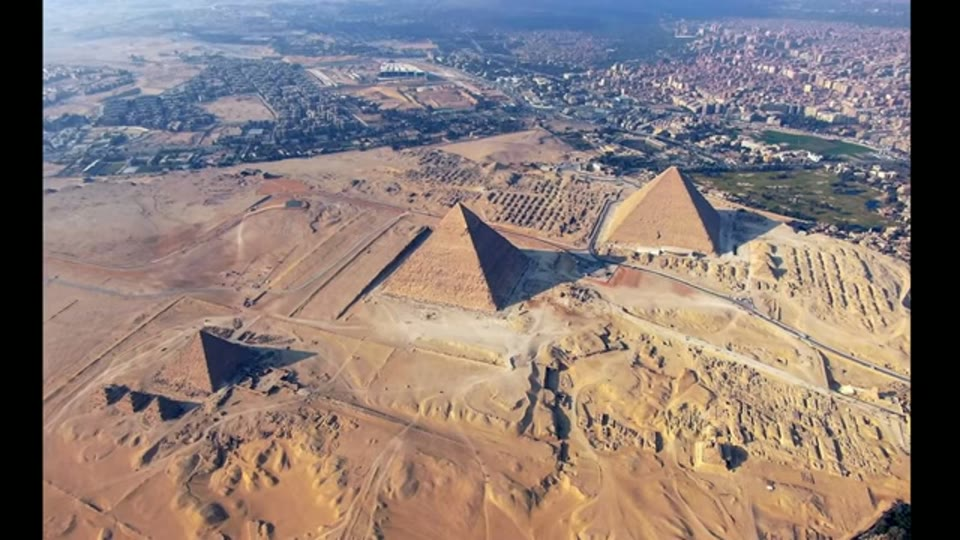

Curious Being
Do the Great Pyramid's Math and Star Alignments Really Work?
Tina · 22 min · watch on YouTube · summarised 2026-08-23
The prompt is a challenge from her own commenters 00:00–01:28: if the pyramids were mine waste storage, why are they built to such precision, aligned to the cardinal points and encoded with so many important numbers?
Her answer runs in two parts — a defence of why waste storage would be built carefully, and then a check of the numbers themselves. The second part is where the work is.
Her framing objection is the same one she makes about pyramid function generally: people study one pyramid. Pi, phi, the Earth, the Sun and the stars all get read off the Great Pyramid while the others are ignored, and singling one out produces "a biased over-interpreted theory".
Khafre, not Khufu
A preliminary that undercuts the Great Pyramid's special status 01:32–03:02. Citing a 2012 survey by UK researchers, she reports that "the sides of Khafre's are more perfectly perpendicular than those of Khufu's". Khufu rises at 51°50'24"; Khafre at 53°13', steeper — and Khafre still holds intact casing on top.
She accepts that the Great Pyramid is eight-sided, its four faces each split base to tip by a subtle concave indentation. But Khafre, she notes, is not eight-sided and performs better structurally. Her conclusion: perhaps eight sides was not the superior design.

The pyramid she argues is the better piece of construction, and the casing that survives on it.
Six numbers, checked
The core of the video 10:09–17:37.
1. Pi. Base length divided by height, times two. Close to π, not equal. Her questions: if the builders were more advanced than us and wanted to display mathematical mastery, why not make it exact — and where does the multiplier of 2 come from?
The 2 is not arbitrary, though the video leaves the question open: the claim is normally stated as perimeter ÷ height = 2π, and four sides over twice the height is the same expression she writes.
2. Phi. Slant height of a face divided by half the base length. True φ is 1.61803. Close, not equal. She notes the calculation treats the pyramid as four-sided, having just established that it is eight-sided.
Here she brings in the strongest external source in the video: Walter F. Rowe, professor of forensic sciences at George Washington University, who took the 22 true pyramids whose heights and base dimensions can be established with reasonable accuracy and computed π and φ for every one of them, from dimensions published by Baines and Malek in 1980.
She puts his whole table on screen, with the URL of his manuscript under it, and it says more than her narration does. Three pyramids are picked out, and two of them beat the Great Pyramid:
| pyramid | base (m) | height (m) | π | φ |
|---|---|---|---|---|
| Khufu, Giza | 230 | 146 | 3.150685 | 1.616105 |
| Neuserre, Abusir | 81 | 51.5 | 3.145631 | 1.617708 |
| Huni, Maidum | 147 | 93.5 | 3.144385 | 1.618104 |
| true value | 3.14159 | 1.61803 |
Huni's pyramid at Maidum is closer to π and closer to φ than the Great Pyramid is, and nobody has ever written a book about Maidum. That is the coincidence argument in one row.

The coincidence test: run the same two calculations on every pyramid and see whether the Great Pyramid is special.
3. The polar radius. The Great Pyramid's height × 43,200. The multiplier is said to derive from precession at 1° per 72 years — a rate she traces to Ptolemy in the 2nd century AD and notes that modern astronomy does not accept. And 43,200 is not 72 but 72 × 600, and she cannot find where the 600 comes from. Result: 6,333 against the true 6,356.7523 km.
4. The equatorial circumference. Base perimeter 921.452 m × 43,200. 39,807 against 40,075 km.
5. The Earth–Sun distance. Against the pyramid's original height: 149.6 against 146.6.
6. The speed of light. The Great Pyramid's latitude, 29.9792458°N, carries the same digits as 299,792,458 m/s — and this is the one she says does match. Then she takes it apart 14:35–15:47, quoting a Full Fact article which in turn cites Snopes, and highlighting the passage on screen:
- The claim gives one coordinate, not two, so it does not specify a location — only a line.
- That line does pass through the Great Pyramid, and through many other places in the world.
- It passes slightly north of the pyramid's peak. Snopes found that 29.9791750°N would be closer to the apex — but that number does not match the speed of light.
- The figures run to seven decimal places, which allows about 20,000 distinct lines to be drawn between roughly 29.9802000°N and 29.9782000°N, all of them passing through the pyramid.
To which she adds her own two points: there are four coordinate lines matching the speed of light and the pyramid sits on one; and there are places where latitude and longitude both match, one of them not far from Giza, so why not build there?

Why a coordinate matching a constant is not a coincidence worth explaining - a building is not a point.
Her scorecard: of six, five are close but not matches, and the sixth is cherry-picking.
She also rejects the standard rescue 17:01–17:37 — that the pyramid's measurements are imprecise so the matches are imperfect. Her reply: the surveys were done by professionals with modern instruments, and it is inconsistent to accept the measured speed of light, astronomical unit and polar radius while treating the pyramid survey as the unreliable term.
The pattern she names: "it almost appears as if people were trying to read into the pyramid's dimensions by playing with various combinations of numbers until they found ways to compute these numbers to make them somehow close to a few important values."
The stars
The Orion Correlation Theory, proposed by Robert Bauval in the 1980s, has the three Giza pyramids positioned to represent Orion's Belt 17:37–18:54. She grants the visual similarity in Bauval's overlay, then raises three problems: the alignment is not perfect; it works on naked-eye astrometry, which she argues is beneath the standard of builders she takes to be more advanced than us; and the stars of Orion's Belt have moved, so their relative positions then were different. She adds that a Danish explorer wrote of a fourth pyramid at Giza in the 18th century — and if that is true, four pyramids would not match three stars.

The correlation as Bauval draws it, which is the whole of the evidence for it.
The star shafts. Egyptologists in the 1960s suggested the so-called air shafts were aimed at stars — one toward where the north star would have been at construction, one generally toward Orion's Belt, both regions important in Egyptian mythology. Her objection is that the whole proposal assumes dynastic construction, which she rejects; on an earlier date the alignments do not hold.
Her general point 19:37–20:26: there are countless stars, they move, and constellations change, so almost any building can be correlated with something at some date. And a civilisation that knew stars move would not align permanent structures to them.
Cardinal alignment, explained cheaply
The one precision claim she accepts and then deflates rather than denies 08:57–10:04. The chart she shows is not hers: it is Table 2 of a Glen Dash survey paper, with its URL on screen, and it gives each pyramid's deviation from true north in minutes of arc, side by side:
| pyramid | N | E | S | W | average |
|---|---|---|---|---|---|
| Meidum | −35.4 | −20.6 | −23.6 | −18.1 | −24.4 |
| Bent | −7.5 | −17.3 | −4.2 | −11.8 | −10.2 |
| Red | −8.7 | ||||
| Khufu | −2.9 | −3.4 | −3.7 | −4.6 | −3.6 |
| Khafre | −5.2 | −6 | −5.7 | −6 | −5.7 |
| Menkaure | 16.8 | 12.4 | 13.0 | 14.1 | 14.1 |
Her reading of it is that they are all within a degree of true north, with Khufu and Khafre deviating least — and Khafre's east and west lines, both at −6, exactly parallel.
Her explanation is mundane: modern architectural drawings are set out to the cardinal points because that is the easiest and most common way to draw and build. A structure squared to north is simply the convenient one to lay out. She suggests the ancient architects did the same thing.

How accurate the alignment actually is, which is what any explanation of it has to account for.
Why waste storage would still be precise
The other half of her answer 03:18–08:51, and it is argument by analogy rather than evidence. Permanent storage of potentially toxic material is a serious engineering problem; mine waste used to be dumped into rivers and lakes with disastrous results; a large permanent storage site needs real calculation for stability and longevity. She points at photographs of municipal sewer systems as structures that are unglamorous, critical, and built to great accuracy — function and beauty together.
On the pyramids specifically: the core stones are not uniform and only roughly dressed, and the precision people cite is in the casings, chambers and passages. She reads the tight casings as an impermeable outer layer and rock buttress, the same role played by the buttress in a tailings mound design.
What you can check yourself
- All six calculations are arithmetic, done on published figures. Anyone can redo them and see whether the results are matches.
- Rowe's study is named with its author, institution and a URL, its source data is credited to Baines and Malek 1980, and its full table is on screen. The one result that matters — that Maidum beats Giza on both constants — can be read straight off it.
- The latitude argument needs no expertise at all. How many lines of latitude pass through a 230-metre-wide building, and whether the quoted one passes through its apex, are questions with definite answers.
- The pyramid slopes — 51°50'24" and 53°13' — are surveyed values.
- The alignment table is a published survey with its URL on screen, and gives deviations in arcminutes for six pyramids, so nobody has to take "within a degree" on trust.
- The latitude objection is a published fact-check, credited to Full Fact and Snopes on screen, with the alternative coordinate stated.
- Whether other Egyptian pyramids also approximate π and φ is the crux, and it is settled by the same arithmetic applied to their dimensions.
- That the stars of Orion's Belt have moved since any proposed construction date is uncontroversial astronomy.
- The core stones' rough dressing is visible on every uncased face at Giza.
What the video does not settle
- The pi relation has a conventional explanation she does not address. A pyramid built to a fixed slope convention — a set run per unit rise — produces a base-to-height ratio near π automatically, as a by-product of the slope rather than as encoded knowledge. Her question "why isn't it exact" has an answer on that reading, and the video does not engage with it.
- "Close but not exact" is a weaker verdict than it sounds without a stated tolerance. How close a match has to be before it counts as intentional is never defined, so the standard being applied is left implicit even though the whole scorecard depends on it.
- The unfalsifiable premise does a great deal of work. Again and again the argument is that the builders were more advanced than us, so imperfect work is beneath them. That premise cannot be tested, it is assumed rather than argued, and it would dispose of any correlation however good.
- It also cuts against her own case. She rejects star alignments because loose resemblance proves nothing, and then argues that pyramids are mine waste storage from resemblance to tailings mounds and sewer systems. The standard is not applied to both.
- The cardinal-alignment explanation does not survive her own table. "It is easiest to build square to north" would explain an intention to align. The table she displays shows Khufu off true north by an average of 3.6 arcminutes — six hundredths of a degree — which is not what convenience produces. It also shows a pattern she does not mention: the deviations shrink steadily from Meidum through the Bent and Red pyramids to Khufu, then reverse sign at Menkaure. Her source is a paper about dating pyramids by that drift, and she uses it to argue the alignment is unremarkable.
- Rowe's table is shown but its best result is left in the narration's margin. That Maidum matches both constants more closely than Giza does is on screen in her own graphic and is never said aloud, which is the single most damaging fact in the video for the numerology and the one a viewer is least likely to take away from it.
- The eight-sided objection is applied selectively. She uses the concavity to disqualify the φ calculation but not the π one, which uses the same base and height.
- The fourth pyramid is hearsay. An unnamed Danish explorer in an unspecified century is not evidence against Bauval, and she says herself she could find little about it.
See also
- Great Pyramid: Not a Power Plant — the same comparison-class objection turned on Christopher Dunn's theory three weeks earlier.
- Prehistoric Mining: What was Mined on the Giza Plateau — the hypothesis these commenters were pushing back on, argued in full a fortnight later.
- Pyramid Construction Theories — the 0.014% test, the same instinct applied to how the pyramids were built rather than to what they encode.
- What They are Not Telling You About Precise Egyptian Stone Vases? — the other entry in which an alternative presenter checks a famous alternative measurement claim and reports that it does not hold.
What we have not checked
- Walter F. Rowe's manuscript has not been read, though it is fully identified on screen — author, institution, the URL
home.gwu.edu/~wfrowe/pyramid_manuscript.pdf, and its dimensions credited to Baines and Malek, 1980. All figures here are read off her screenshot of his Table 1. - The Full Fact article and the Snopes check behind the latitude argument have not been read; both are named on screen and their wording is quoted from her highlighted screenshot.
- The Glen Dash survey paper has not been read. Its Table 2 is on screen with the URL
glendash.com/downloads/archaeology/working-papers/Simultaneous_Transit.pdf, and the arcminute figures are read from that frame. - The 2012 UK survey of pyramid perpendicularity is not named and has not been traced; whether it is the same work as the Dash paper shown later is not established.
- Robert Bauval's Orion Correlation Theory is given in her summary; his own work has not been read, and the overlay is his as she presents it.
- The figures are as stated and have not been recomputed independently: 51°50'24" and 53°13'; the 921.452 m base perimeter; 6,333 against 6,356.7523 km; 39,807 against 40,075 km; 149.6 against 146.6; φ as 1.61803.
- The claim that about 20,000 distinct lines can be drawn through the pyramid at seven decimal places, and that four coordinate lines match the speed of light, has not been verified.
- The Danish explorer's fourth pyramid is unsourced in the video and remains unsourced here.
- The attribution of the 1° per 72 years precession figure to Ptolemy has not been checked.
- The 1960s Egyptologists who proposed the star-shaft reading are not named.